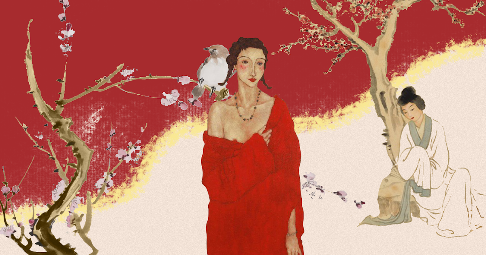

Cultura Chinesa
A cultura chinesa é uma das mais antigas e ricas do mundo, com uma história que remonta a milhares de anos. Ela é influenciada por várias dinastias, tradições filosóficas e religiões. O idioma chinês é uma parte fundamental da cultura, e o mandarim é o dialeto mais falado. A escrita chinesa é baseada em caracteres, cada um representando uma palavra ou ideia, e é uma das mais complexas do mundo.
A filosofia chinesa desempenhou um papel importante na cultura, com filósofos como Confúcio, Laozi e Sun Tzu influenciando não apenas o pensamento chinês, mas também o pensamento global. O confucionismo enfatiza a moralidade, a ética e a ordem social. O taoísmo foca na busca da harmonia com a natureza e o universo. O budismo também tem uma presença significativa na China, com uma rica tradição espiritual. Saiba mais clicando aqui.
Arte
A arte chinesa é uma tradição rica e diversificada que abrange milhares de anos de história e cultura. Resumidamente, a arte chinesa pode ser dividida em várias categorias principais, incluindo pintura, caligrafia, cerâmica, escultura, arquitetura e artes decorativas. Aqui está um resumo das características e elementos mais importantes da arte chinesa:
- Pintura: A pintura chinesa tradicional frequentemente enfatiza a expressão de emoções, a natureza e a harmonia. Tinta-da-china e aquarela são os meios mais comuns. Pintores chineses são famosos por suas paisagens montanhosas, pinturas de flores e pássaros, bem como retratos. As pinceladas são muitas vezes abstratas e sugerem movimento e energia
- Caligrafia: A caligrafia chinesa é uma forma de arte altamente valorizada, e a escrita chinesa é frequentemente considerada uma forma de arte por si só. O estilo de escrita pode variar desde a caligrafia regular até o cursive e o semi-cursive. A caligrafia chinesa é apreciada pela beleza das pinceladas e pela expressão do significado nas palavras.
- Cerâmica: A cerâmica chinesa é uma das mais antigas e influentes do mundo. A porcelana chinesa é especialmente famosa, com suas delicadas peças de porcelana azul e branca, bem como a porcelana colorida esmaltada. As cerâmicas chinesas muitas vezes apresentam motivos decorativos, como dragões, flores e paisagens.
- Escultura: A escultura chinesa abrange uma variedade de estilos e materiais, desde pedra e bronze até argila e madeira. Esculturas frequentemente retratam figuras históricas, divindades e animais mitológicos, e são frequentemente encontradas em templos e mausoléus.
- Arquitetura: A arquitetura chinesa é conhecida por seus telhados inclinados, pátios internos e design simbólico. Os pagodes, templos, palácios e jardins chineses são exemplos notáveis de arquitetura tradicional. A simetria e a harmonia são valores-chave na arquitetura chinesa.